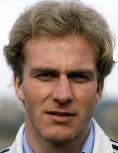
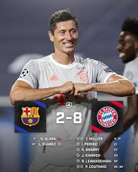

Top 10 Bundesliga Pleyers
| Name | Age | Club |
|---|---|---|
| Franc beckenbauer | Died | retiered |
| Gerd muller | 75 | retiered |
| Karl-Heinz Rummenigge | 68 | retiered |
| Robert lewandowski | 36 | Barcelona |
| oliver khan | 55 | retiered |
| Philipp lahm | 40 | retiered |
| Manuel Neuer | 38 | Bayern munich |
| Bastian Schweinsteiger | 39 | retiered |
| Franck ribery | 41 | retired |
| Arjen robben | 40 | retired |
Franz Beckenbauer

Gerd muller

Karl-Heinz Rummenigge
Robert lewandowski
Oliver kahn

Philipp lahm

Manuel neuer

Bastian Schweinsteiger

Franck Ribery

Arjen Robben